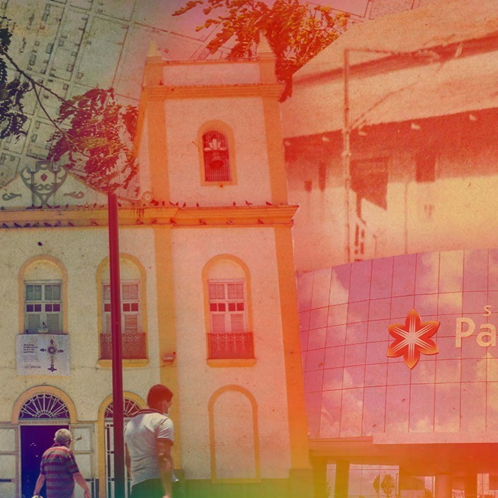
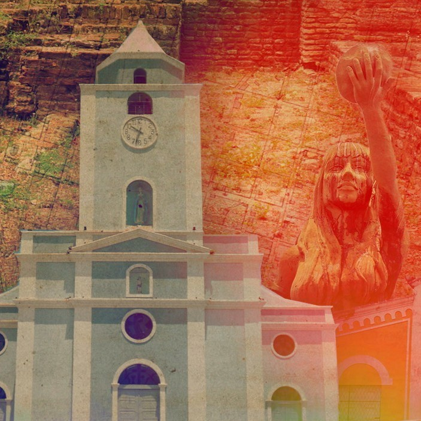

Reportagens

Mobilidade urbana
Malha cicloviária para quem? Distribuição nos bairros da Capital
Mobilidade urbana
Infrações à malha cicloviária superam em 18 vezes o ano de 2021
Transparência pública
Mudanças climáticas
Grandes chuvas em Fortaleza: impactos e aprendizados futuros

